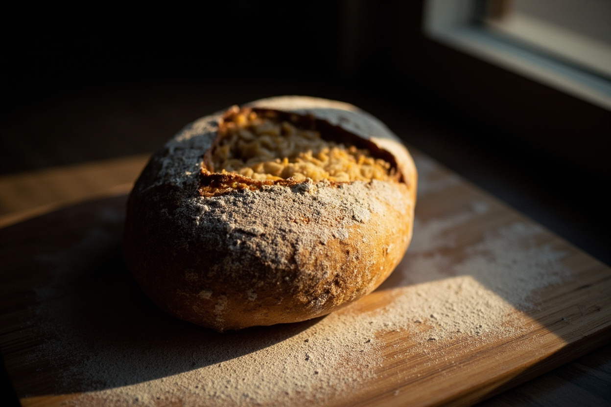

Профсоюзная, 23
18 мест, розетки у левой стены, туалет и место для коляски у входа. Здесь пекарня и своя обжарка, зерно можно купить на пачку.
- Будни
- 7:30 - 21:00
- Суббота, воскресенье
- 9:00 - 21:00
Открыто до 21:00
Цены в рублях, кофе наливаем 250 мл. Альтернативное молоко и сироп бесплатно, двойной шот espresso плюс 40 ₽. Воду набираем в стакан без счёта.


Покупаем зелёное зерно у двух фермеров, печём на барабанном ростере 15 килограммов партию. Обжарка занимает 11 минут, в кофейню зерно попадает в тот же день к 15:00.

250 г от 790 ₽
Забираем в кофейне на Профсоюзной, 23 без заказа. По Казани везём в день обжарки до 18:00, доставка 200 ₽, от 10 пачек бесплатно.
Закваску ставим в 22:00, тесто в печь в 5:40. За день выходит три партии, и то, что не разобрали за первый час, отдаём пекарю за половину цены.
Две закваски на 12 хлебов, шестьдесят круассанов. К восьми в зале очередь из десяти человек.
Сладкая партия под дневной трафик. Шарлотку печём 18 штук, второй заход делаем в 15:00.
К вечеру зал едет за сыром, супом и хлебом, поэтому выпечку делаем с запасом на 60 штук.


На Профсоюзной большой зал с пекарней и розетками, на Островском окно на парк, кофе на вынос и десять мест внутри. В зале тихо после 19:00, днём шумно.
18 мест, розетки у левой стены, туалет и место для коляски у входа. Здесь пекарня и своя обжарка, зерно можно купить на пачку.
Открыто до 21:00

Десять мест у окна на парк, всё на вынос. Печём то же, что и на Профсоюзной, но партию меньше: два выхода, 7:30 и 12:00.
Открыто до 21:00
Собираем стол на 12 человек и больше: привозим кофе в стеклянных графинах, стаканы, салфетки и воду. Заявку принимаем за сутки, если день срочный, звоните.
Работали с издательством «Казанский дом», IT-командой из Патрисава и двумя свадьбами. По предоплате 30 процентов бронируем дату.